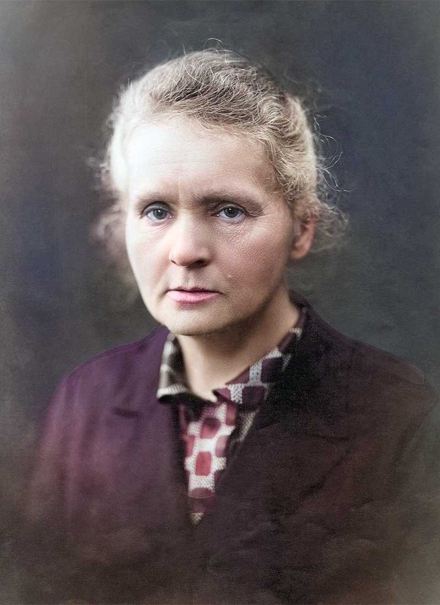

Marie Curie fue una científica que dejó una huella muy importante en la historia gracias a sus investigaciones. Elegí este personaje porque su dedicación al estudio y su perseverancia demostraron que el conocimiento puede generar grandes cambios en la sociedad.

"Nada en la vida debe ser temido, solamente comprendido."
Esta frase me parece interesante porque expresa la importancia de comprender aquello que desconocemos antes de sentir temor frente a nuevas situaciones o conocimientos.
Marie Curie nació en Polonia en 1867 y posteriormente se trasladó a Francia para continuar su formación académica. Durante su carrera realizó investigaciones que aportaron nuevos conocimientos sobre los materiales radiactivos.
Junto con Pierre Curie participó en investigaciones relacionadas con el radio y el polonio. Estos trabajos fueron importantes para el avance de diferentes áreas de la ciencia y posteriormente contribuyeron al desarrollo de aplicaciones médicas.
Otro aspecto que considero admirable es que logró destacarse en una época en la que las mujeres tenían muchas más dificultades para acceder a oportunidades académicas y científicas. Su historia demuestra la importancia de la disciplina, el esfuerzo y la perseverancia.
Si deseas conocer más detalles sobre su vida y sus investigaciones, puedes consultar información adicional sobre Marie Curie .